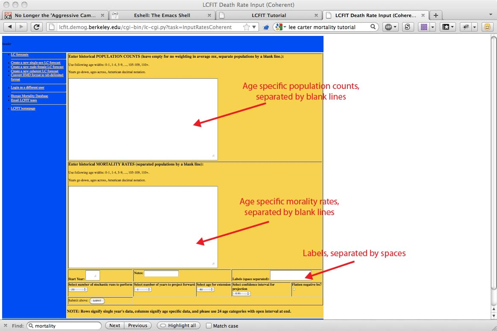
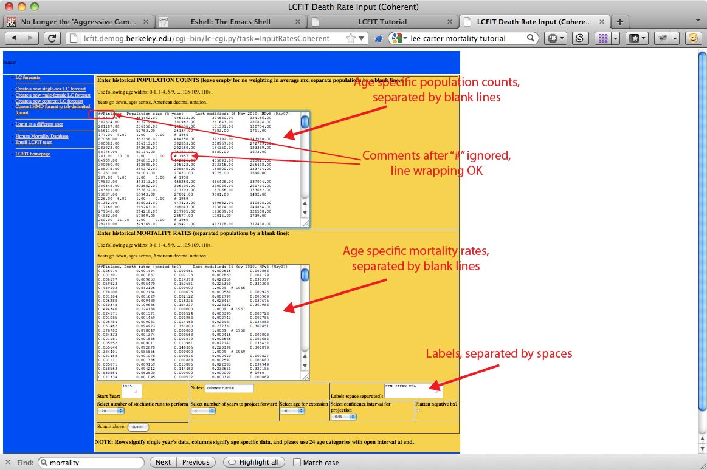
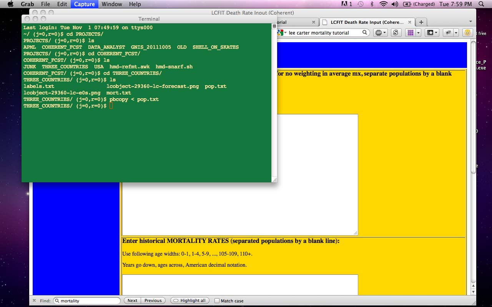
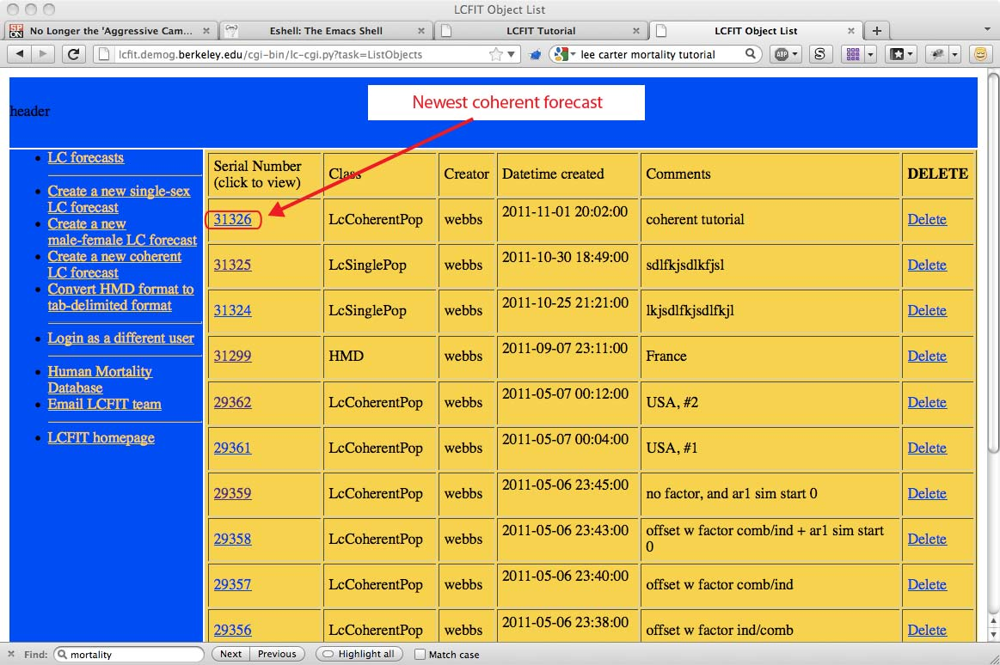
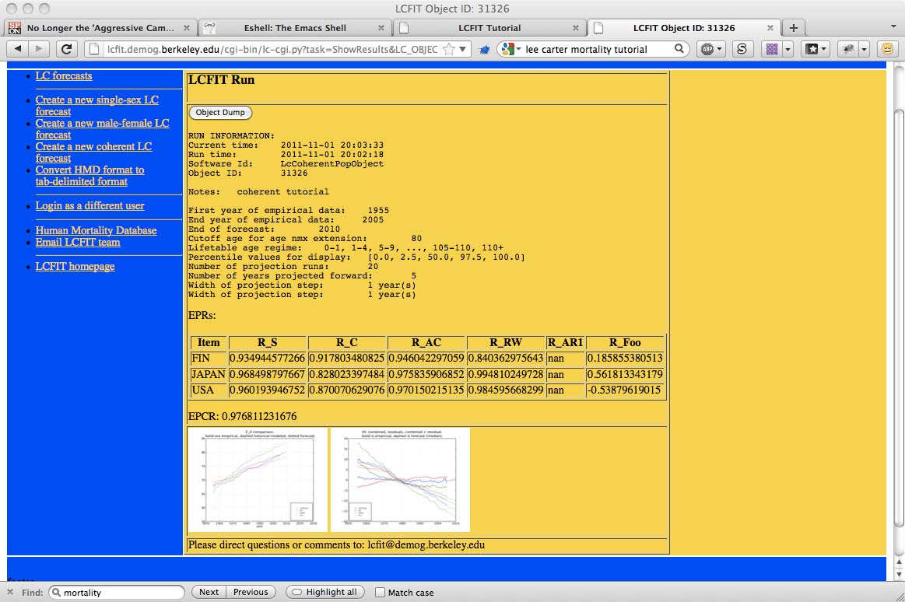

This tutorial will guide the user through an entire "coherent" mortality forecasting process using LCFIT. This forecasting method allows the user to forecast several populations that are interrelated somehow. Applications include male and female subpopulations in a single country, or multiple countries that share social characteristics (our example is using three developed nations with long life expectancies -- Japan, Finland, and the US.
Note that if you have never used LCFIT for mortality forecasting, you should first get familiar with the single population LCFIT interface using this tutorial. The basic tutorial covers things like logging in and getting useable data from the Human Mortality Database.
The tutorial goes as follows: (click to navigate):
Each of these high-level steps will be broken down into smaller steps below, with screen shots and examples. To zoom in on image, click it. To jump forward to a section, click on one of the section descriptions listed above. To jump back to the list of sections, click on the heading.
We have the same basic input style as with single population LCFIT, except for a few new things:
Here is what a screen looks like before entering any data:
Here is what a screen looks like AFTER entering any data. It is OK that the data seems to wrap around (the logical structure of the data is fine).
There are sometimes data management issues with coherent datasets. I keep mine in plain text files in my working directory, then load them into the clipboard with the Mac OS X command "pbcopy". Other people use Excel. See below for an example of calling pbcopy on the command line.
Find the most recent forecast in the stack of forecasts. Click on it. Here is a listing page example:
You will be presented with something that looks the image below. There are fewer graphs than in the single population LCFIT application, because they become much harder to interpret with multiple populations.
The plot on the left is the life expectancy at age zero (e_0) for each population (colored), and the average of the populations (black). The faint lines are modeled values; both solid and strong indicates empirical, while solid and faint indicates modeled. The dashed lines are forecasted e_0's.
The plot on the right describes the kt values. The slightly fainter lines are the kt's for the residual values, the strong lines are the kt's for the hte main trend. Dashed indicates forecast values.
The table contains the main parameters for the time series forecasts (see the articles for more information).
As always, use the Object Dump link to get all the data, including intermediate values.
We hope this tutorial has been useful. If you have questions or suggestions, please email the LCFIT administrator.